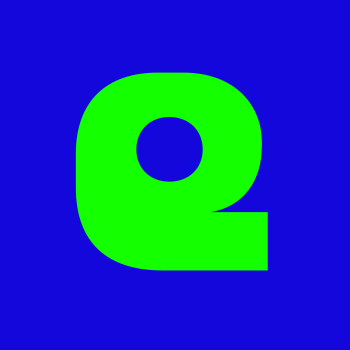
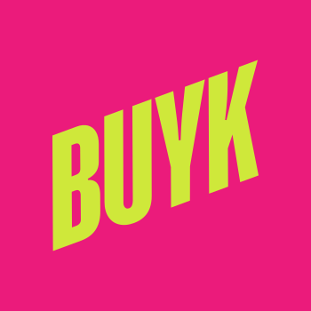

Привет, я София —
продуктовый дизайнер
Больше 5 лет делаю внутренние B2B‑продукты для веба и мобайла: системы учёта, админки, интерфейсы с картами, большими таблицами и ML‑расчётами. Чаще всего была единственным дизайнером на продукте и вела фичи от исследования до релиза. Люблю, когда обязательные рабочие сценарии проходят без обучения и подсказок.
Кейсы


Опыт

Ecom.tech (ex. Samokat.tech)2022–2026
дизайнер продукта · IT-компания группы Самокат · B2E

- Приняла от ушедшего дизайнера фичу зон доставки и за 2 недели спроектировала инструмент их отрисовки на карте: им стали пользоваться все логисты
- Спроектировала учёт IT-оборудования для дарксторов и офиса: директора стали оформлять заявки без обращений в поддержку, CSI 86%
- Собрала набор UI-компонентов, который стал отправной точкой для мобильной дизайн-системы внутренних продуктов

BUYK2021–2022
дизайнер продукта · стартап доставки в США · B2E

- Спроектировала приложение курьера за 3 итерации: от концепции до прода
- Спроектировала бэк-офис для сети 35+ дарксторов в Нью-Йорке и Чикаго: цены, налоговые коды, хранение товаров, пересчёты
- Вместе с более опытным дизайнером собрала основу UI-кита внутренних продуктов
INLY2020–2021
дизайнер · дизайн-студия
- Провела 9 глубинных интервью в исследовании для PepsiCo по заказу Accenture и презентовала на английском свою часть результатов
Обо мне
Делаю системы, в которых работают не потому, что хочется, а потому что надо. Задачу в них сотрудник выполнит в любом случае, а быстро или спотыкаясь, зависит от дизайна.
В команде вела ретро и делала аватарки для рабочих чатов. Для корпоратива дизайнеров придумала квест-карточки: проходишь три игровые станции и собираешь наклейки.
Играю в D&D и на ПК. Последние сто часов ушли на Red Dead Redemption 2. Собираю любимые альбомы на виниле, а что слушаю сейчас, видно на last.fm.
Мой пёс Рикки однажды устроился курьером в Самокат, чтобы заработать на корм.